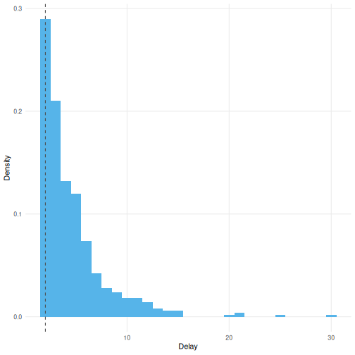
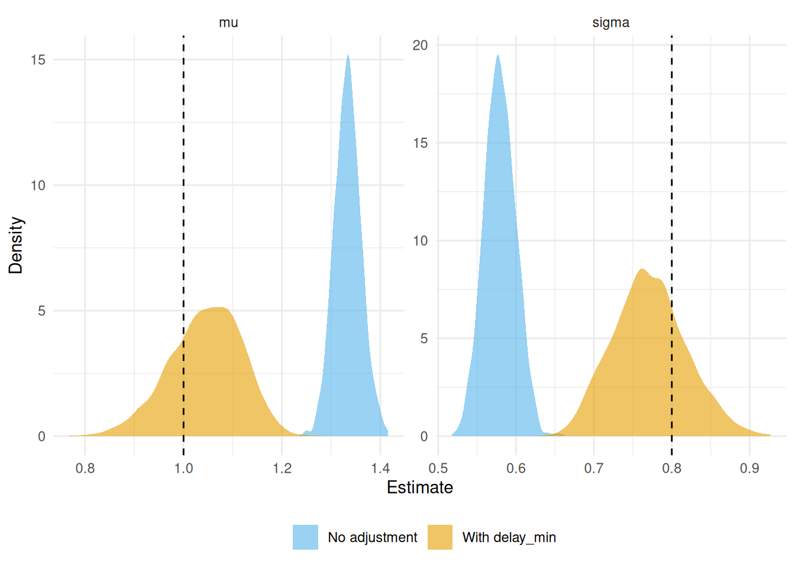
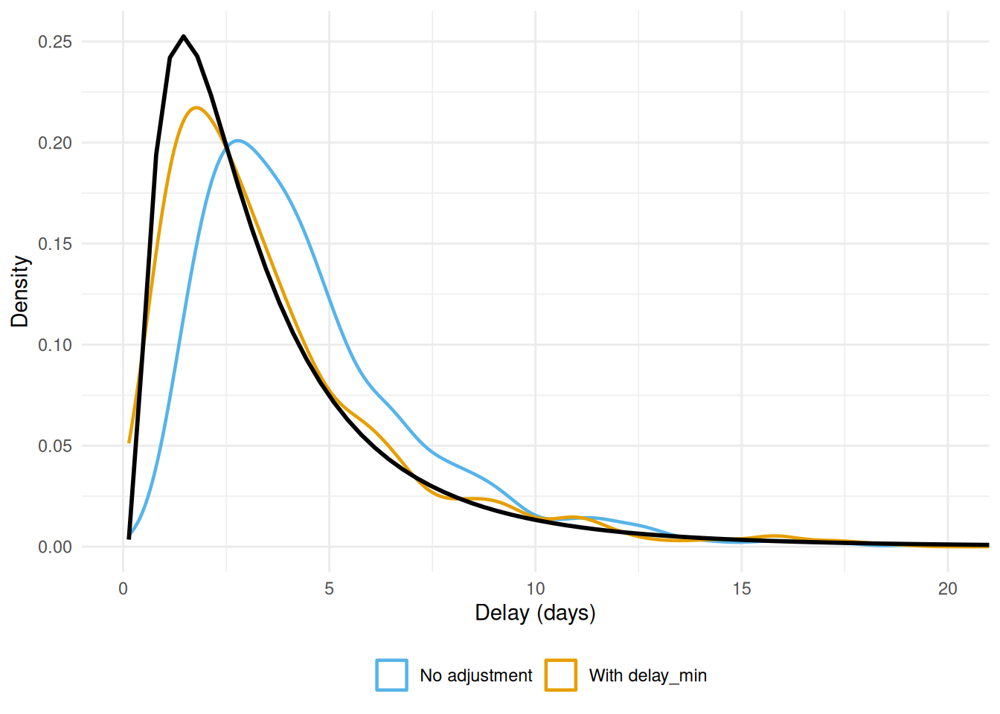

Some delays are only ever recorded above a minimum value. Generation intervals are often defined to exclude same day transmission. Case definitions sometimes require a minimum time between two events before a pair is recorded. In both settings the observed delays are a left truncated sample from the delay distribution of interest.
Write \(L\) for that minimum and \(F\) for the delay distribution. Only delays above \(L\) can enter the sample, so the observed delays follow the conditional distribution \[ F(t \mid T > L) = \frac{F(t) - F(L)}{1 - F(L)}, \qquad t > L . \] Fitting \(F\) directly to such a sample biases the estimate. The model has to explain the missing short delays by shifting the whole distribution.
With right truncation at \(D\) as well, the likelihood renormalises over \([L, D]\) \[ \frac{F(t) - F(L)}{F(D) - F(L)} . \]
The delay_min argument of as_epidist_marginal_model() sets \(L\).
It is passed to the primarycensored likelihood as its L argument.
delay_min is a duration in the same units as the delay, not a date.
delay_min truncates on the same scale as the response, that is the observed delay between the primary window lower bound and the secondary event.
Data should therefore be excluded on the observed delay rather than on the underlying continuous delay.
2 Simulate left truncated data
We simulate an outbreak and a lognormal delay from each primary event. The parameters are chosen so that a large share of the distribution falls below the truncation point.
set.seed(101)
true_meanlog <- 1.0
true_sdlog <- 0.8
delay_min <- 2
obs <- simulate_gillespie(r = 0.2, seed = 101) |>
simulate_secondary(
dist = rlnorm,
meanlog = true_meanlog,
sdlog = true_sdlog
)Roughly this share of the delay distribution lies below the truncation point.
plnorm(delay_min, true_meanlog, true_sdlog)
#> [1] 0.3506501We add daily censoring windows and then drop the pairs whose observed delay is below delay_min.
obs_trunc <- obs |>
mutate(
ptime_lwr = floor(ptime),
ptime_upr = ptime_lwr + 1,
stime_lwr = floor(stime),
stime_upr = stime_lwr + 1
) |>
filter(stime_lwr - ptime_lwr >= delay_min) |>
mutate(obs_time = max(stime_upr)) |>
slice_sample(n = 500)The observed delays are truncated below delay_min.
ggplot(obs_trunc, aes(x = stime_lwr - ptime_lwr)) +
geom_histogram(
aes(y = after_stat(density)),
binwidth = 1, fill = "#56B4E9", alpha = 0.7
) +
geom_vline(
xintercept = delay_min, linetype = "dashed", linewidth = 0.8
) +
labs(x = "Observed delay (days)", y = "Density") +
theme_minimal()
Figure 2.1: Observed delays after left truncation. The dashed line marks the minimum delay.
3 Fit models with and without the adjustment
linelist <- as_epidist_linelist_data(
obs_trunc$ptime_lwr,
ptime_upr = obs_trunc$ptime_upr,
stime_lwr = obs_trunc$stime_lwr,
stime_upr = obs_trunc$stime_upr,
obs_time = obs_trunc$obs_time
)
marginal_no_trunc <- as_epidist_marginal_model(linelist)
marginal_trunc <- as_epidist_marginal_model(linelist, delay_min = delay_min)A delay_min column already in the data is picked up without the argument.
Pass a column name instead of a number when the minimum varies between observations.
linelist$delay_min <- delay_min
identical(
as_epidist_marginal_model(linelist)$delay_min,
marginal_trunc$delay_min
)
#> [1] TRUEdelay_min is stored as a column and passed to the likelihood.
marginal_trunc
#> # A tibble: 500 × 13
#> ptime_lwr ptime_upr stime_lwr stime_upr obs_time pwindow swindow
#> <dbl> <dbl> <dbl> <dbl> <dbl> <dbl> <dbl>
#> 1 33 34 38 39 116 1 1
#> 2 40 41 53 54 116 1 1
#> 3 13 14 17 18 116 1 1
#> 4 20 21 28 29 116 1 1
#> 5 18 19 22 23 116 1 1
#> 6 26 27 30 31 116 1 1
#> 7 22 23 26 27 116 1 1
#> 8 32 33 35 36 116 1 1
#> 9 11 12 15 16 116 1 1
#> 10 29 30 31 32 116 1 1
#> # ℹ 490 more rows
#> # ℹ 6 more variables: relative_obs_time <dbl>, orig_relative_obs_time <dbl>,
#> # delay_lwr <dbl>, delay_upr <dbl>, n <dbl>, delay_min <dbl>
fit_no_trunc <- epidist(
marginal_no_trunc,
chains = 2, cores = 2, refresh = ifelse(interactive(), 250, 0)
)
fit_trunc <- epidist(
marginal_trunc,
chains = 2, cores = 2, refresh = ifelse(interactive(), 250, 0)
)4 Compare parameter estimates
add_delay_parameter_draws() returns posterior draws of the distributional parameters.
For the lognormal family mu is the log scale mean and sigma is the log scale standard deviation.
We use epidist_strata() to take a single row of the transformed data because there are no covariates here.
draw_parameters <- function(fit) {
draws <- fit |>
epidist_strata() |>
add_delay_parameter_draws(fit) |>
ungroup()
return(draws)
}
param_draws <- list(
"No adjustment" = fit_no_trunc,
"With delay_min" = fit_trunc
) |>
lapply(draw_parameters) |>
bind_rows(.id = "model") |>
pivot_longer(
cols = c("mu", "sigma"),
names_to = "parameter",
values_to = "value"
)
true_params <- data.frame(
parameter = c("mu", "sigma"),
value = c(true_meanlog, true_sdlog),
stringsAsFactors = FALSE
)
ggplot(param_draws, aes(x = value, fill = model)) +
geom_density(alpha = 0.6, colour = NA) +
geom_vline(
data = true_params, aes(xintercept = value), linetype = "dashed"
) +
facet_wrap(~parameter, scales = "free") +
scale_fill_manual(values = c(
"No adjustment" = "#56B4E9",
"With delay_min" = "#E69F00"
)) +
labs(x = "Estimate", y = "Density", fill = "") +
theme_minimal() +
theme(legend.position = "bottom")
Figure 4.1: Posterior draws of the lognormal parameters. Dashed lines are the simulation values. The unadjusted model is biased away from them.
The unadjusted model shifts the distribution to the right and understates its spread. The adjusted model recovers the simulation values.
5 Compare the estimated delay distributions
We predict from both models with delay_min = 0 so that the predictions describe the underlying delay distribution rather than the truncated one.
pred_data <- data.frame(
relative_obs_time = Inf, pwindow = 0, swindow = 0,
delay_upr = NA, delay_min = 0
)
draws_pred <- bind_rows(
"No adjustment" = add_predicted_draws(
pred_data, fit_no_trunc,
ndraws = 1000
),
"With delay_min" = add_predicted_draws(
pred_data, fit_trunc,
ndraws = 1000
),
.id = "model"
)
ggplot(draws_pred, aes(x = .prediction)) +
geom_density(aes(col = model), linewidth = 0.8) +
geom_function(
fun = dlnorm,
args = list(meanlog = true_meanlog, sdlog = true_sdlog),
linewidth = 1
) +
scale_colour_manual(values = c(
"No adjustment" = "#56B4E9",
"With delay_min" = "#E69F00"
)) +
coord_cartesian(xlim = c(0, 20)) +
labs(x = "Delay (days)", y = "Density", col = "") +
theme_minimal() +
theme(legend.position = "bottom")
Figure 5.1: Predicted delay distributions against the true lognormal density (black line).
6 Summary
Set delay_min whenever delays below a threshold could not have been observed.
The default of 0 leaves the likelihood unchanged.
delay_min must not exceed the smallest observed delay.
Above it the data are impossible under the model and as_epidist_marginal_model() errors.